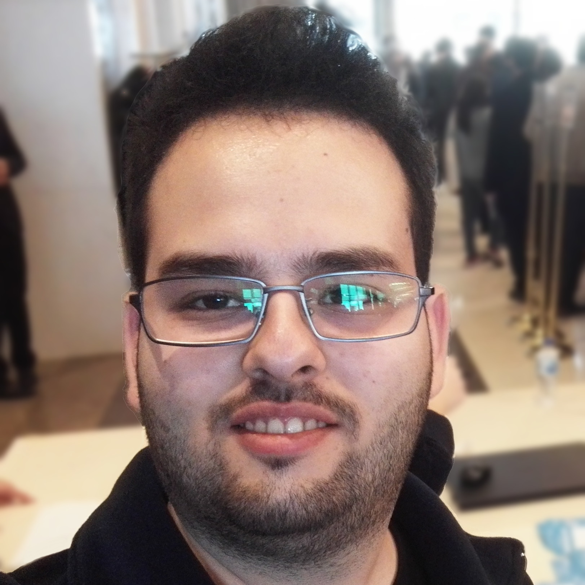

Backend |
PHP, Java, Python, Spring Framework, CommonJS, VanillaJS, Node.js(Typescript, ES), REST APIs, GraphQL, Apollo Server, Redis, Kafka, RabbitMQ |
Frontend |
Vite, ReactJS, Redux, NextJS, Bootstrap, Responsive Design, jQuery, Ajax, HTML5, CSS3, SCSS, SASS |
Infrastructure |
Docker, Bash Scripting, Linux System Management(Debian türevleri), Azure Pipelines CD/CI, AWS Lamba Functions, AWS EC2, DigitalOcean Droplets |
Database Management |
MySQL, PostgreSQL |
Diğer |
Git, Python, MVC, OOP, Design Patterns, Event Driven Architecture, Secure Application Development |
Mart 2024 - Halen
Opencart tabanlı e-ticaret çözümleri, wordpress tabanlı tanıtım ve
katalog
ihtiyaçlarına yönelik çözümler, ReactJS/NextJS tabanlı özel yazılım geliştirme hizmetleri, React
Native
mobil uygulama hizmetleri
Portföy: projects.syntaxbender.com
Mart 2023 - Eylül 2023
Türkiye'nin en büyük internet sağlayıcılarından birisi olan Turknet'te uzun dönem stajım esnasında backend tarafında rol aldım. Backendde Typescript yazarken Redis, Apollo Server, GraphQL, RabbitMQ, Kafka gibi güncel teknolojilerle çalışma fırsatı buldum. Ayrıca Event driven architecture, connection pooling, circuit breaker pattern, singleton pattern, factory pattern gibi benim için yeni olan birçok kavramlarla karşılaştım ve stajım boyunca bu kavramları deneyimledim.
Temmuz 2022 - Ekim 2022
Hayalim olan siber güvenlik alanında deneyim kazanmak üzere startup şirketi olan Deepensive'de, şirketin kendi ürünü olan, herhangi bir şirketin herkese açık olarak yayın yaptığı noktalardan OSINT yöntemiyle çeşitli veriler toplayarak izlediği güvenlik politikalarını analiz etmek ve puanlamak üzere "güvenlik itibari puanlama aracı" uygulamasının geliştiriminden sorumluydum. Araştırma ve yazılım geliştirme süreçlerinde rol aldım. AWS Lambda gibi çeşitli teknolojilerle tanışma fırsatım oldu.
Aralık 2021 - Temmuz 2022
Staj sonrasında Infrastructure ve DevOps alanında kendimi geliştirmek üzere ve şirketin ihtiyaçları doğrultusunda Azure Pipelines kullanarak CI/CD süreçlerini planlama, test ve deployment adımlarını otomatize etme gibi konularda aktif rol aldım. Ayrıca şirketin Ubuntu/Debian tabanlı self-managed VPS üzerinde test ve development ortamlarının kurulumu, yapılandırılması ve periyodik bakımı gibi konularda rol aldım.
Mayıs 2021 - Kasım 2021
Bir startup şirketi olan Vireo Yazılım'da veritabanı tasarımı, veri yapıları gibi konularda haftalık case'ler halinde stajıma başladım. Stajın sonlarına doğru ise web tarafında .NET Core 5 framework yazma fırsatı yakaladım.
Mart 2020 - Temmuz 2022
Çorlu Belediyesi ile Tekirdağ Namık Kemal Üniversitesi arasında imzalanan işbirliği protokolü gereği yürütülen emisyon kaynaklı koku şikâyetlerinin izlenebilirliğinin sağlanması amacıyla geliştirilen projede fullstack developer olarak rol aldım. Web tarafında front controller mantığında bir yapıyla Pure PHP, çeşitli ihtiyaçları karşılamak üzere utils/helpers sınıfları ve önyüzde ise Vanillajs yazdım. Ayrıca veritabanı tarafında MySQL geospatial functions kullanarak mobil app'ten alınan EPSG4623 koordinat düzlemi formatındaki GPS verisi koordinatına göre coğrafi bölge, il ve ilçe tespiti yapan reverse geocoding projesini de geliştirme fırsatı yakaladım. Infrastructure tarafında ise Apache ve PHP-FPM kullandım, günlük yedekleme yapan bir bash script ile de yedeklemeyi sağladım.
Ağustos 2018 - Mart 2019
Kodcu.com'un ana sponsorluğunda ve organizatörlüğünde gerçekleşen Javaday Istanbul etkinliği için, biletlerin yönetimini kolaylaştırmak amacıyla WordPress üzerine bir katman yazılım mantığında Pure PHP yazarak geliştirdiğim, katılımcıların biletlerinin ve bilet düzenleme linklerinin AWS SES servisiyle e-posta olarak gönderildiği ve iletilen link aracılığıyla katılımcıların bilet bilgilerini düzenlemelerine olanak tanıyan "katılımcı bileti düzenleme paneli" web uygulaması, production ortamında yıllardır kullanılmaktadır.

Hasan Özer
Türkçe, Ana dil
İngilizce, Orta Seviye
Efeler / Aydın
Haziran 2016 - Eylül 2024
Not Ortalaması: 3.03
Eylül 2020 - Haziran 2021
IEEE Türkiye Öğrenci Kolları Computer Society Topluluğunda ekip üyesi olarak bir dönem rol aldım. Türkiye genelinde tüm öğrenci topluluklarının katılım sağladığı, geleneksel olarak her yıl düzenlenen CSCamp, CSCON gibi etkinliklerin planlamasında rol aldım. Ayrıca üniversitelerin öğrenci kollarının koordinasyonu ve planlamalarında rol aldım.
Ağustos 2020 - Haziran 2021
Verimli geçen bir komite başkanlığı döneminden sonra yönetim kurulunda başkan yardımcısı olarak topluluğa katkı sağladım. Bu dönem boyunca IEEE TNKU bünyesindeki alt toplulukların(komitelerin) birbirleri arasındaki etkileşimini, paydaşlıklarını ve yıl içerisinde yapılacak olan topluluk etkinliklerinin planlamalarını yaptık.
Mayıs 2019 - Ağustos 2020
IEEE TNKU Computer Society komitesini en iyi şekilde temsil etmek üzere 2019-2020 akademik yılında komiteyi aktif hale getirerek temsilciğini üstlendim. Yeni bir topluluk olduğumuz üzere alanında yetkin bir topluluk olabilmek amacıyla workshop ağırlıklı olarak ilerledik, çeşitli salon etkinlikleri ile de yılı tamamladık.
Mayıs 2018 - Ağustos 2020
IEEE TNKU Öğrenci Kolu bünyesinde düzenlenen etkinlikler için gerekli tanıtım sayfaları, kayıt formları gibi ihtiyaçlarda PHP, MySQL, VanillaJS ve CSS ile çözümler geliştirdim.